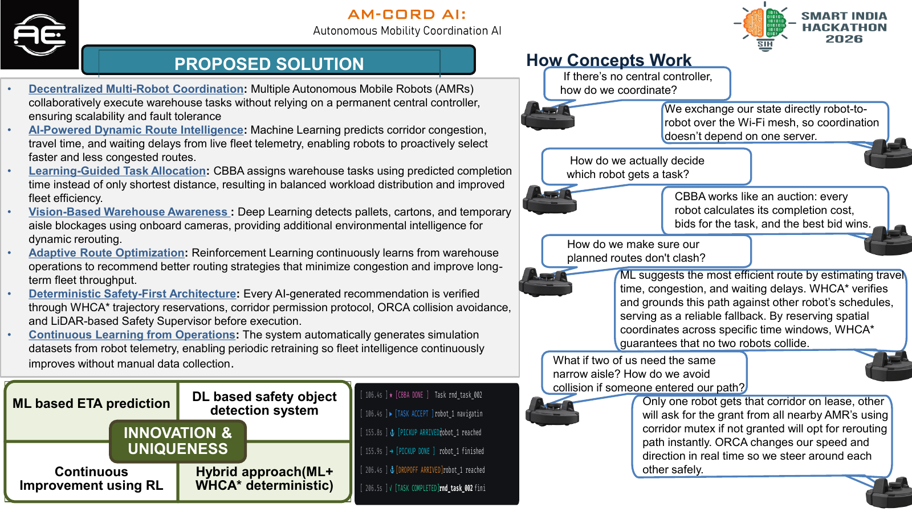
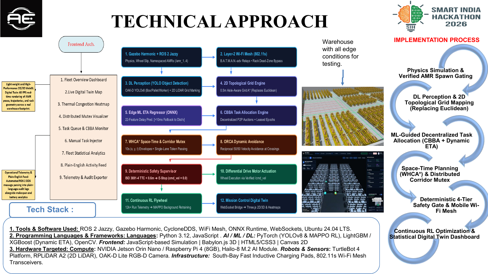
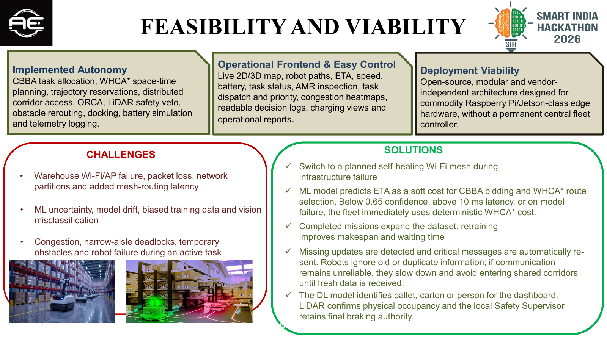
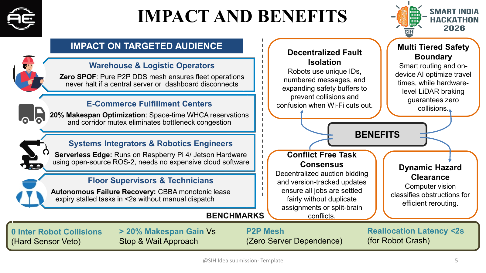
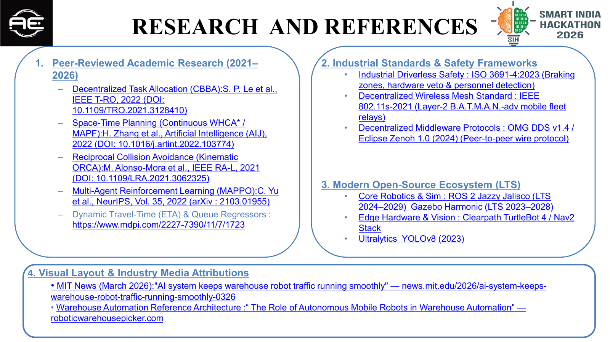

Deterministic Safety-First Architecture: CO-WHCA* trajectory reservations, corridor leases, ORCA and the LiDAR-based Safety Supervisor verify every AI recommendation before execution.
Robots make decisions locally and share state through Zenoh-assisted ROS 2 communication. A router improves startup discovery without becoming a fleet decision controller.
CBBA works like an auction. Each robot calculates a completion cost, then the fleet agrees on one winner before assigning the task.
ML estimates travel time and congestion. CO-WHCA* then verifies the route against short time-space reservations so robots avoid conflicting paths.
One AMR receives an exclusive lease for a narrow aisle. ORCA adjusts motion in real time, while LiDAR safety can slow or stop the robot.

rmw_zenoh_cpp), Cyclone DDS fallback, WebSockets, Ubuntu 24.04 LTS.AI roadmap: Python, PyTorch, YOLOv8, LightGBM/XGBoost ETA models and MAPPO reinforcement learning.
Target hardware: Raspberry Pi 4 / Jetson-class edge devices, TurtleBot 4, 2D LiDAR and optional RGB-D camera.

CBBA task allocation, CO-WHCA* time-space planning, trajectory reservations, distributed corridor access, ORCA, LiDAR safety veto, obstacle rerouting, docking, battery simulation and telemetry logging.

O(N) router registrations vs. O(N²) DDS peer discovery
